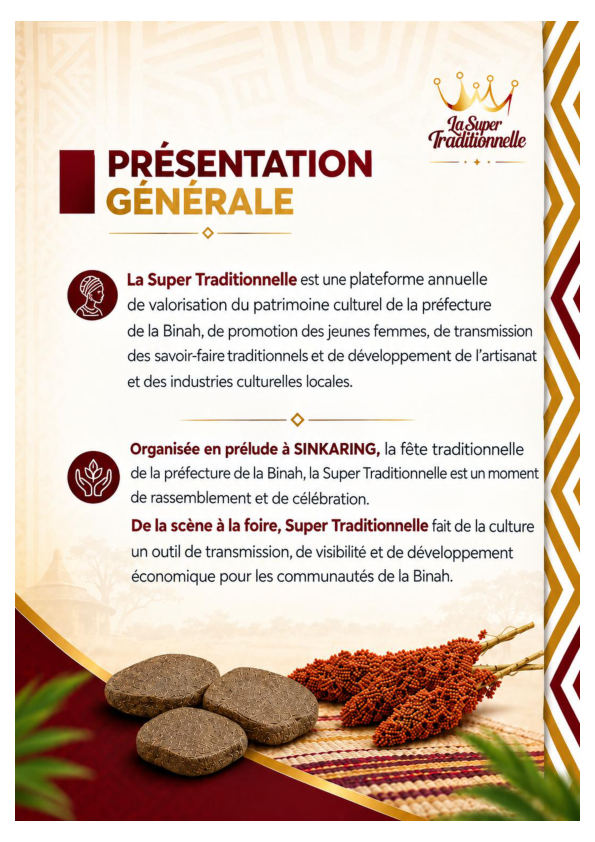
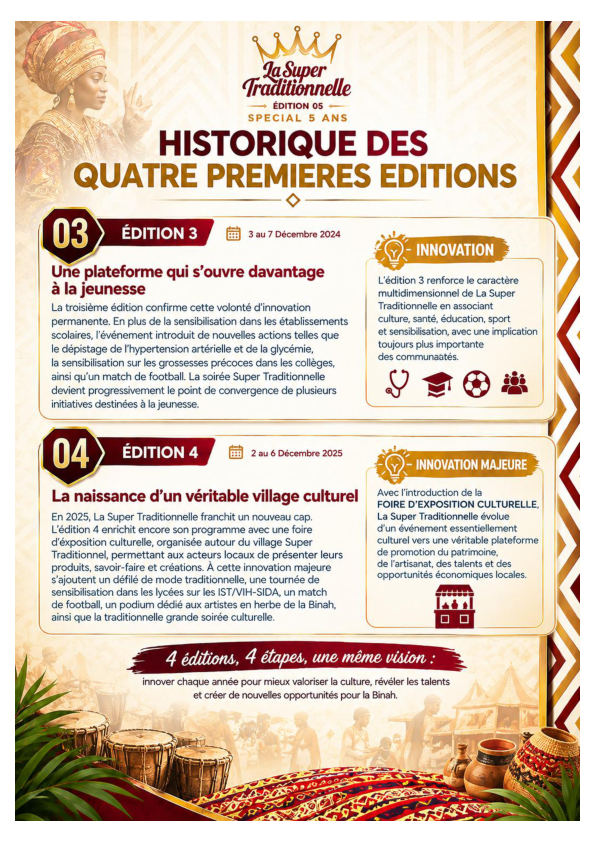
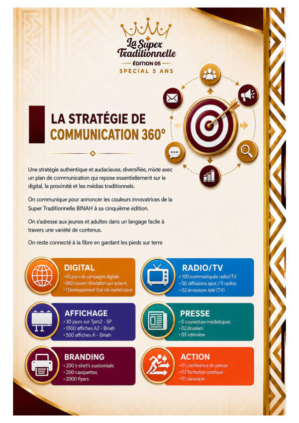
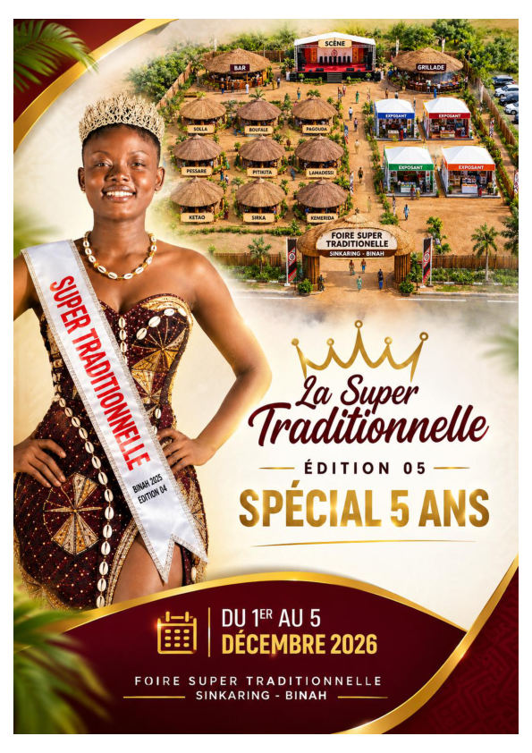
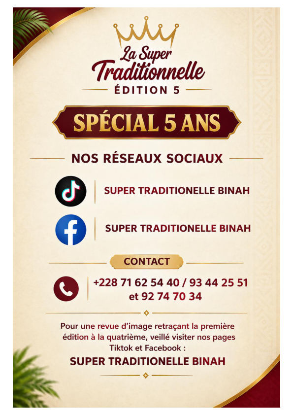

Culture & patrimoine
Mettre en lumière les traditions, expressions culturelles et savoir-faire de la Binah.
LA SUPER TRADITIONNELLE revient pour sa cinquième édition, avec une ambition renforcée : faire de la culture un outil de transmission, de visibilité et de développement économique pour les communautés de la Binah.
La Super Traditionnelle est une plateforme annuelle de valorisation du patrimoine culturel de la préfecture de la Binah, de promotion des jeunes femmes, de transmission des savoir-faire traditionnels et de développement de l’artisanat et des industries culturelles locales. Organisée en prélude à SINKARING, elle constitue un moment de rassemblement et de célébration.
Mettre en lumière les traditions, expressions culturelles et savoir-faire de la Binah.
Offrir une plateforme d’expression et de valorisation à la jeunesse et aux talents locaux.
Stimuler l’entrepreneuriat culturel et artisanal à travers la Foire d’Exposition Traditionnelle (FETRA).
Scène culturelle, foire d’exposition, artisanat, mode traditionnelle, actions sociales, rencontres et visibilité des partenaires se rejoignent dans une même dynamique.

Quatre éditions, quatre étapes, une même vision : innover chaque année pour mieux valoriser la culture, révéler les talents et créer de nouvelles opportunités pour la Binah.
La première édition a posé les bases d’une initiative dédiée à la valorisation du patrimoine culturel de la préfecture de la Binah.
La deuxième édition a marqué une ouverture vers de nouvelles dimensions : sensibilisation, responsabilité sociale et action communautaire.
La troisième édition a consolidé la visibilité de l’initiative et renforcé son ancrage auprès des communautés et des acteurs culturels.
La quatrième édition a introduit la Foire d’Exposition Culturelle et Traditionnelle, ouvrant une nouvelle dimension économique et artisanale.

De l’animation culturelle à une plateforme plus large, l’événement évolue pour réunir scène, foire, savoir-faire, talents, communautés et partenaires.
Pour cette cinquième édition, l’événement se veut une grande plateforme culturelle, de la scène à la foire, avec une programmation qui associe culture, traditions, savoir-faire, jeunesse, solidarité et visibilité des partenaires.
Les dates et activités présentées dans le dossier de la cinquième édition.
Digital, radio/TV, affichage, presse, branding, actions de proximité et diffusion de contenus partenaires sur grand écran lors des temps forts.

Le dossier prévoit quatre niveaux de partenariat, avec des contreparties adaptées à chaque formule.
Répartition du budget présentée dans le dossier de la cinquième édition.
Cliquez sur une image pour l’ouvrir en grand. Dans la fenêtre plein écran, utilisez les flèches, les touches ← → ou faites glisser sur mobile.

Pour toute information, partenariat, sponsoring ou participation à la foire.

Pour consulter toutes les pages originales dans leur format PDF, utilisez le bouton ci-dessous.